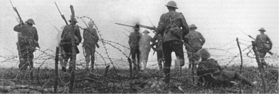
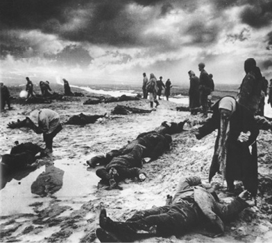
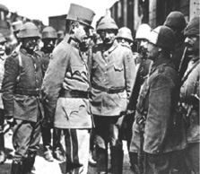

VIII
Avrupa Siyasî Birliği ve Avrupalılar
Doğu-Batı Sorunu
Esas konu, Avrupa Siyasî Birliği fikridir. Yani, Avrupalıların bizatihi kendi tarihidir. Bu konuya Avrupa Siyasî Birliği karşısında Türklerin konumuyla devam etmek durumundayız ve her zaman için üzerinde durmamız gereken önemli bir nokta, kültürel birliktir. Çünkü, anlaşıldığı kadarıyla, Türkiye teknik reformlarını yapmış bir ülkedir. Zaten aslında daha ileride de göreceğiz ki, teknik bakımdan Şark ve Garb, Türkiye ve Avrupa arasında ayırım olduğu bir efsanedir.
Nasıl bir ayırımdan söz ettiğimizin üzerinde duralım. Avrupa ile Afrika ve Avustralya’nın geri kalmış toplulukları diyebileceğimiz toplumlar arasındaki farktan söz etmiyoruz sadece. Çok rafine uygarlık sahibi bazı toplumların da aslında uygarlık anlayışı bakımından, uygarlığı yaratan bilim anlayışı bakımından Avrupa ile arasında farklar vardır ve vardı. Çinlilerin matematik anlayışı ve bilgisi Garblılarınki gibi değildi. Onlar bunu telafi ettiler.
Dünyanın bu kesimi, yani Ortadoğu bölgesi için ise, böyle bir şey söz konusu değildir. Bu konudaki birinci yanlış efsane, Şark’ın kendinden değil, Garb’dan gelmektedir. Burada farklı bir ilim anlayışı olduğu söylencesi çok yanlıştır; hiçbir şekilde fark yoktur. Her ikisi de Aristotelesçi fizik, Yunan geometrisi ve bunun orta zamanlardaki tekâmülü ve devamıyla aslında uygarlık bakımından bütünün parçalarını oluştururlar.
Öte yandan bu bilimsel ve felsefî uzaklık, ayrılık efsanesini ve bu kanaati besleyen, bizatihi Şarklılardır. “Biz geriyiz veya maalesef biz din dolayısıyla aynı şeyi tekrarlamış oturmuşuz (ka’ale geleneği)” veya “Onlar ilmî, biz metafizik safhadayız” gibi sloganlar mektep kitaplarına girmiştir; nesiller, bu kalıp düşünceyle yetişmiştir. İddianın aksine, bu resmî eğitimin sonucu değildir. Bürokrasi ve öğretmenlere has kahvehane ve sohbet kültürü (oral tradition) bu zihniyeti yaratmıştır. Okuyan, yazan, tarih bilen ve felsefe yapan kafalar için bu tabii önemsiz, yanlış bir düşünce gibi mütalaa ediliyor ve üzerinde durmuyoruz; ama düşünmemiz gerekir ki, toplumların yüzde sekseni tarih gibi, kültür tarihi gibi konuları ancak okulda öğrenirler; okul kitaplarından öğrenirler ve bir daha da bu konuların yüzünü açmazlar. Bu bütün toplumlar için böyledir; Türk toplumu için özellikle böyledir. Liseyi bitirdikten sonra bu konuları merak edip bir şeyler okuyan ve öğrenen insanların miktarı, Batı’nın en çok okuyan toplumlarında %10 ise (bu da galiba Germenler ve İskandinavlar oluyor), bizde meselâ %2’dir. Tam sayımı yapılmamıştır, ama kitap sayılarından, tercüme sayısından belli oluyor. Maalesef, bizim insanlarımızın kafasında mektep kitaplarında çizilen Avrupa ve Şark imajı kalmıştır, bu da tabii yanlış bir imajdır. Yani Şarklılar açısından bir farklı Batı kavramı çizilmiştir. Peki ama nedir bu Garb ile Şark arasındaki fark? Şüphesiz ki birtakım dinî ayrılıklar da vardır ve bu ayrılıklar çoğu zaman zannedildiği gibi, dinin kendisinden de kaynaklanmamaktadır. Çünkü aslında İslâm, Hıristiyanlık ve Yahudilik, her zaman üzerinde durduğumuz gibi, aynı kaynaktan neşet eden, Yahudi dinleridir. Mühim olan, bu dinin yorumlanması, kuramlaşması, yeniden biçimlendirilmesine, yani toplumların kendi tarihî ve antropolojik özelliklerine dayanmaktadır. İşte bu noktada beliren önemli farklılıklar vardır.
Türkiye Batı karşısında teknik bakımdan uçurumu aşmıştır. Teknolojinin düzeyinden söz etmiyorum, oradaki mühendislik zihniyeti burada da vardır, oradaki tıp burada da vardır, oradaki sibernetik dediğimiz enformatik bilimler kafası burada da vardır. Tatbiki ve üretimi başka iştir; bilirsin, tatbik etmezsin veya bilirsin, ihtiyaç yoktur, kullanmazsın, o ayrı bir sorundur. Fakat, Türkiye Batı teknolojisinin dilini, kalıplarını bilir. Bunun için çok bilinmeyen bir kaynağa bakalım. Bu kaynak, 1960’ların, 70’lerin, 80’lerin Türkiye’sine has değildir. 1910 yılında Berlin’de Robert Koch Enstitüsü’nü gezen Osmanlı Darülfünunu’ndan Hulki Bey’in anlattıklarını dikkate alalım. Enstitünün profesörleri laboratuvarı gezdirirken, “Bizim anladığımızı, ilgilendiğimizi, cevap verdiğimizi, soru sorduğumuzu, tartıştığımızı görünce şaşırdılar” diyor. Şaşırdılar, çünkü zannediyorlar ki, gelen Türk hekimleri beceriksizdir, modern tıb bilimini anlamazlar; ama ne yapalım, Kayzer’le Sultan’ın da arası iyi, bu adamlara da burayı gezdireceğiz, vakit de kaybedeceğiz, der gibiydiler. Ama bakıyorlar ki hiç de öyle değil, gelenler tıp okumuş, yani modern tıbbı biliyorlar, Almanlar şaşmış. Aslında 20. asrın başında bu çoktan başarılmış ve geçilmiş bir safha; tabii, oradaki başarılı ameliyat İstanbul’da yapılmıyordu, onu iddia edemeyiz, ama onun yapılamamasının birtakım nedenleri vardır; temiz hastaneler yoktur, yetişmiş ara personeli yoktur, bugünkü dertlerin, sorunların boyutlarını büyüterek geriye götürün, vaziyet anlaşılır. Aynı dönemde, unutmayın ki sonradan İstanbul şehremini olan Topuzlu Cemil Paşa, Fransa Cerrahlar Cemiyeti’nde azadır ve bazı tezler geliştirmektedir. Geliştirdiği tezler de ilginçtir. Hatıratından da anlaşılıyor ki, imkânsızlıklar ve pislik içinde çalışan hastanede bu ameliyatlar nasıl yapılır; yani, İstanbul gibi yerler için ucuz ve kolay sağlanabilir sterilizasyon yöntemleri neler olabilir konusunda yeni teklifleri var. Anlaşılıyor ki, Türk tabibi, Türk cerrahı o dünyanın bir parçasıdır. İyi parçasıdır, kötü parçasıdır, başarılı, başarısız parçasıdır, elinde imkânlar vardır veya yoktur o başka, ama o fen adamları sınıfının üyesidir. O dilin ve medeniyetin azasıdır.
Osmanlı toplumu teknolojiye açık bir toplumdu. Türkiye’nin o günden bugüne Batı dünyasında iltifat etmediği kalıp, kültürel hayattır. Binaenaleyh, Türkiye o safhayı geçmiştir. O kültür dediğimiz de, Kant’ın kültür felsefesi, Beethoven musikisi falan değil; şu kadarını söyleyelim, o safha da geçilecek; orada da artık zamana uyulmuştur. Yaşayış tarzında bazı sorunlar ve tabii Türk toplumunun dinin etrafında ördüğü, tarih içinde oluşan kendine özgü kültürel kalıpları vardır. Bunlar önemlidir ve burada maalesef toptan batıcılık yapanlara da bir noktayı hatırlatmak gerekir: Karşımızda modernizm modeli olarak alacağımız Batı da, değişmeyi kabul ettiğimiz zaman dahi, Batı Avrupa’nın kendisi değildir. Çünkü Avrupa’nın en büyük problemi, daha doğrusu hepsinde müşterek olarak bulunan büyük problemin bir adı vardır: Amerikanizm. Yani Avrupa’nın kendisi artık klasik Avrupa kültürünü, Amerikanizm adına kaybetmekte; kuşaklar ve sınıflar arasında açılan uçurumlar gittikçe tahrikkâr olmaktadır.
Avrupa’nın Kültürel Kimliği
Avrupa’nın siyasî-kültürel kimliği nedir? Daha doğrusu kültürel bakımdan ele alacağımız Avrupa’nın siyasî birliği nedir? Avrupa’nın, dünya sahnesine çıkışı şüphesiz taş devriyle başlar. Neanderthal adam Avrupa’da bulunmuştur, bu insan gelişiminde bir safhadır. Sonra demir devri, (Hollstein kültürü) çok ilginç bir safhadır. Doğu’nun bazı medenî kavimlerinden de daha erken çağda orada bir demir çağı, demir kullanımı vardır. Ama, Avrupa uygar bir toplum olarak beşeriyet sahnesine çok geç girmiştir. Şüphesiz bu gecikme, Avustralya ve Afrika kadar değilse de bir hayli geçtir. Doğrudan doğruya tarihî çağlar içinde vukua gelmektedir. Çünkü tarih dediğimiz şey, hakikaten yazının kullanımına bağlıdır. Tarih yazıyla başlar dediğimiz zaman, boş söz sarfetmiyoruz. Çünkü yazı, bir toplumun kendini ifade ve davranışını muhafaza ve aynı zamanda da kendini yeniden üretme aracıdır. Dolayısıyla bu kültüre geçmeyen bir toplumun uygar olduğunu söylemek mümkün değildir. Hiç kimse kusura bakmasın, eski tarihimizle övünürüz, hakkımızdır da; fakat Türklerin de uygar dünyaya adım atışı yazıyla mümkündür. Bunu da hepinizin bildiği gibi 8. asra götürüyoruz, okullarda öğretildiği gibi. Ama gide gide bir iki asır daha geriye gidecek; çünkü, son kazılar, buluntular göstermektedir ki, yazıyı kullanış tarihimiz 700’ler değildir; ciddi kazı, ciddi arkeoloji, ciddi tespit yapmadığımız için böyle söylüyorlardı. Bu tarih anlaşılan birkaç yüz yıl geriye gidebilir. Fakat ondan evvelinde Türkler için de uygar toplum demek doğru değildir, ama tarihî toplumdur. Tarih yapar, tarihte rolü vardır, ama kendi kaydetmez. Yani Türklersiz 3. asır tarihi düşünülemez, 2. asır tarihi düşünülemez, mümkün değildir. Ama Türklerin kendilerini ifade etmeleri kendilerini ortaya koymaları, kendilerini yeniden bir şekilde üretmeleri yazıyla mümkün olduğuna göre, bizde de tarih 6. asra kadar gidebilir.
Bundan daha geç kalanlar vardır. Kimdir onlar? Slav milletleri. Uygarlığa girişleri bizden daha geçtir, ama arayı kapatmışlardır. Tarihe baktığınız zaman, klasik Avrupa toplumlarının durumu da bundan daha iyi değildir. Ve Avrupa, tarihî bir kıta olma durumunu neye borçludur? Doğrudan doğruya, Büyük Roma İmparatorluğu’nun istilâsına... Romalılar, Julius Caesar’ın ve haleflerinin, meselâ Germanicus’un atlılarıyla (equitatus), piyadeleriyle (peditatus), bu kıtaya adım atmışlardır, burada castra’larını (kalelerini) kurmuşlardır. Vergi veren yerler olarak, Roma’ya tâbi kılmışlardır. Romalılar birtakım kabileleri müttefikler olarak almışlardır; Avrupa da böylece tarihin konusu olmuş ve medeniyete adım atmıştır. Şu halde Avrupa kıtaya bağlılığını, dünya tarihine girişini aslında doğrudan doğruya İtalya’nın ortasındaki Latinlere ve onların diline borçludur. Bu çok önemli bir noktadır. Çünkü İtalya, tarihte iki kere bu görevi yerine getirdi. Sonuncusu bildiğiniz gibi, Rönesans dediğimiz dönemdir ki; İtalya, Akdeniz’in birleştirici, sentezci gücü rolüyle Batı Avrupa’yı tekrar ileri götürecektir.
Uygarlığa ve tarihe Roma’nın istilâsıyla adım atan Batı Avrupa’nın dilleri de taşralı şeklinde de olsa, doğrudan doğruya İtalya’ya bağlıdır. Halbuki Şark için bu söz konusu değildir. Çünkü Roma Şark’a istilâcı olarak gelmiştir. İdareci olarak gelmiştir ve asıl önemlisi barışın kurucusu olmuştur, ama hiçbir zaman medeniyet öncüsü olarak, yani medeniyetçi bir misyonla gelmemiştir. Roma geldiği zaman, buralarda yazılı diller vardı, medeniyetler vardı, kayıtlar vardı, Roma’nın kendisini etkileyen tanrı kültleri vardı; toplumlar bir kimlik, teşkilât sahibiydiler. Unutmayalım ki, Mısır’ın Julius Caesar tarafından istilâsı ve imparatorluğa bağlanmasından sonra, Roma’da gerçek bir malî sistemin gelişiminden söz etmek mümkündür. Çünkü, o tarihe kadar Roma vergilendirmeyi bilmeyen, vergi toplayamayan bir devletti. Ne zaman ki Mısır’ı istilâ etti; ziraatı takip eden, toprağı ölçmeyi, ürünü hesaplamayı bilen, bunları vergiye döken bir teşkilâtla karşı karşıya geldi ve Roma ondan sonra gerçek bir malî sistem sahibi oldu. Ne zaman ki Roma Yunanistan’la yüz yüze geldi, çok meşhur sözdür: “Mağlub Yunanistan, galibini yeniyor, Graecea capta ferum, victorem capit”; demek ki, orada felsefeyi, idarenin bazı unsurlarını, dini öğrendi. Ne zaman ki Roma, Anadolu ile Mezopotamya ve Suriye ile yüz yüze geldi, dinî ve medenî dünyası değişti. Unutmayalım, Roma’daki en güçlü kültlerden biri Kybele kültüydü; ayinler bugünkü Vatikan tepesinde ifa edilirdi, merkez orası idi. Bu bir Anadolu kültüydü. Roma’da en makbul kült Mısırlı Tanrıça İsis kültüydü. Romalılar Yunancayı severlerdi, Şark dillerini bilmek zorundaydılar ki, bir ölçüde imparatorluklarını devam ettirsinler; dolayısıyla Roma’nın Şark’ta medeniyetçi misyondan çok bir askerî fonksiyonu vardı, ama Avrupa kıtasının üzerinde ise, doğrudan doğruya uygarlık yaratan bir rol ifa etmiştir ve bundan sonra bu kıtanın insanları, yani ağaçlar üzerinde yaşayanlar, uygarlığa doğrudan doğruya Roma’nın ve onun dilinin ve âdetlerinin etkisiyle adım atacaklardır. Mussolini zamanında Faşist Parti gençliğe dağıttığı broşürlerde, “Başka milletler ağaçlar üzerinde yaşarken, senin ülkende medeniyet vardı” diyor.57Romalılara sahip çıkıyor bu doğru, fakat eksik olan bir şey var: Bugünkü İtalya’yı oluşturan insanlar da o kavimlerin göçüyle gelmişler, yani, eski İtalya’nın yıkımına katılmışlardır. Tabii, aynı zamanda o medeniyetten en çabuk ve en yoğun bir biçimde istifade eden insanlar olarak da modern İtalya’yı oluşturmuşlardır.
Siyasî safhaları itibariyle baktığımız zaman, Batı Avrupa’daki kabileler Roma’nın altında müttehid olarak yaşıyorlardı. Aralarında da gayet gaddar çatışmalar vardı. Meselâ, bir pasaj aklımızdadır: “Galyalılar aralarında çatışıyor Sueb’lerin büyük şefi Ariovistus, Haedular’a karşı Sequvanlar’a yardım ediyor, fakat ondan sonra yardım ettiği müttefiklerinin topraklarını kendi askerleriyle bölüşüyor ve onları köle yapıyor.” Şimdi, hem o yenilen Haedular, hem de bu zavallı Sequvanlar Roma’dan yardım istiyor ve Galler’e adaleti ve barışı Roma iade ediyor ve bir nizam meydana getiriyor. Demek ki, tarih ve uygarlık burada bu şekilde başlıyor. Bu imparatorluğun yıkılışından sonraki kavimler göçü sırasında (bu, modern Avrupa’yı oluşturan olaylar silsilesidir) Franklar, daha çok ağırlıklı olarak Fransa’da (ama sırf onlar değil, daha bir sürü kabileler var), Germenlerin içinde Suebler, Alemanlar gibi birtakım kabileler; modern İspanya’nın oluşumunun temeli olan Vizigotlar, kıtanın milletlerini oluşturuyorlar ve bir müddet sonra, aşağı yukarı 8. asrın sonunda Charlemagne’ın Büyük İmparatorluğu oluşuyor. Bu bugünkü Fransa’yı, bütün Benelüks’ü, Almanya’yı, Avusturya’yı ve Kuzey İtalya’yı (Lombardiya ülkesini) içeren bir imparatorluktur. Zaten Charlemagne’ın unvanlarına baktığımız zaman, Frank Kralı, Longobartların Kralı ve Germenlerin Başbuğu; sonunda 800 yılında (miladî), Roma’da Papa’nın elinden imparator olarak taç giyiyor. Artık Avrupa ortaya çıkmıştır. Bu yeni kıta, Roma mirasına sahip olduğunu iddia eden, ama aslında son derecede taşralı ve geri kalmış bir mirasçıdır. Roma’nın dinine sahip olduğunu iddia eder, doğrudur; ama Roma’da oluşan dini hiçbir şekilde tartışmadan kabul eden bir kavimler topluluğudur. Çünkü o din, yani Hıristiyanlık, Doğu’da, yani İskenderiye’de, Kudüs’te ve bizim sınırlarımızdaki Antakya’da müthiş bir felsefî tartışmayla, hiyerarşik kavga ve bunalımlarla gelişmekteydi.
Halbuki Şark’taki bu kavganın yanında, Garb’daki insanlar, yani Barbarlar, kilisenin hâkimiyetini ve doktrinini gayet rahat bir şekilde kabul ediyorlar. Burada, Hegelci bir tabir kullanmıştık; “Barbarisches Gemüth-Barbarik lakaydi”, yani meselâ, Harvard’daki, Yale’deki Amerikalı hukukçu Amerikan Yüksek Mahkeme kararlarını tartışır, gırtlak gırtlağa gelir, kılı kırk yarar; fakat Iowa’lı çiftçi Amerikalı için bu hiçbir şey ifade etmez, onun için bu Birleşik Devletler’in mevzuatıdır. Orada ne uygulanması emrediliyorsa, öyle olur. Batı Avrupa’ya Hıristiyanlık, temel kavgalarını bildirerek gelmiştir; eğitimsiz kavmin dine girişi Hıristiyanlığın benimsenmesi, devletin ve toplumun buna göre şekillenmesi söz konusudur. Bu imparatorlukta çok ilginç bir şekilde dünyevî otoritenin, yani imparatorun yanında, kilise ayrı bir kurum olarak üstünlüğünü hissettirmektedir.
Kilise Şark’ta da vardır, fakat hiçbir zaman dünyevî otoritenin üstünde ve onun dışında ve onun yanında bağımsız bir kurum olarak kendini kabul ettirme hakkına sahip değildir. Çünkü, oralardaki devlet ve imparatorluk geleneği buna mânidir. Demek ki, kıtada çok önemli bir şekilde insanların arasında parçalanma (partikülalizm) eğilimi söz konusudur. Yani, her bölgenin başındaki şef, o şefin altındaki her kabilenin başındaki küçük başbuğlar, kendi siyasî otoritelerini kabul ettirme eğilimindedirler ve bunların arasında otoriteye tâbi olmaktan çok, bir tür anlaşma söz konusudur. Demek ki, vahşiler arasındaki, kavgacılar arasındaki kavgaları bastırmak, dindirmek için mevcut akitlerde (zımnî akit) kurulan bir sistem söz konusudur ve Batı’daki imparatorluğun, Doğu’daki (bizim bugün Bizans dediğimiz) imparatorlukla arasında çok büyük bir farktır bu. Doğu’da devlet ve halk ilişkileri, otorite ilişkileri bu gibi kontratlara dayanmaz; ve bu imparatorluktaki kuvvet, bu imparatorluktaki birlik, Batı’daki imparatorlukta görülmez. Bu çok önemli bir nokta; çünkü eksik olan otorite, bugünkü demokrasinin esasıdır; bu Avrupa’ya has, doğuştan bir üstünlük gibi gösterilmektedir. Çok ilginç bir şey, yorum değişiyor. Ortaçağın bu hakîr görülen özelliği, bugünkü tarih anlayışında progress, ilerilik olarak yorumlanıyor. Halbuki o tarihte bu, doğrudan doğruya, çaresizlikten, kargaşadan ileri gelen bir nevi küçük ateşkesler, uzlaşmalar bütünü gibiydi. 800’de güya bir siyasî birlik gibi görülen bu Batı Avrupa İmparatorluğu; Papa’nın elinden Büyük Karl’ın taç giymesiyle hukuken teşekkül etti. (Tabii ki, bu imparatorluk çok kısa zamanda aslî parçalarına bölünecekti.)
Bu arada kıtanın tümünün bir Hıristiyan imparatorluk ve camia olmasını önleyen gelişmeler vardır. Hepimizin bildiği gibi, 8. asrın ortalarında Müslüman Arap ve Berberilerin İspanya’ya (Endülüs’e) adım atmaları gibi bir olay, Hıristiyanlığın Avrupa tarihinin en büyük yaralarından biridir. Bazı şeyler unutulmuyor, hiç unutulmayacak ve aslında unutulmaması gereken olaylardan birisi de İspanya’nın kendisidir. Çünkü Endülüs bitti, yani sekiz asır kadar orada kaldıktan sonra tamamıyla atıldı. Fakat atılamayan bir şey, o uygarlığın izleridir. Ve bu İspanya’daki Katolisizm için çok rahatsız edici bir kalıntıdır. Karşımızda çoğulcu bir kültürün kalıntıları vardır ve onun üzerine geldiği iddia edilen İspanyol Rönesansı gerçek anlamda bir Rönesans değildir; yeni bir Katolik zihniyet, eski çoğulculuğun üzerine oturmuştur. Müslüman Endülüs’te, Müslüman Arapların yanında Yahudiler, onların yanında bizatihi eski Hıristiyanlar, Vizigotların çocukları bir arada yaşamaktadırlar. Bu “Mozarab” dediğimiz takımın (musta’rib, “Araplaşmış” kelimesinden gelmedir), Arap dili çerçevesinde yarattıkları kültür, ilim ve siyasal uzlaşım sistemi, kıtada daha çok uzun zamanlar görülmeyecek bir şeydir. Ve 1492’de İspanyolların Reconquista’-
sından, yeniden fetihten sonra (çok yakın bir tarihtir), Arapların Endülüs’ten Yahudilerle birlikte sürülmesi, yağma ve katliama uğramaları yeryüzünde Nazi Holocaust’undan evvelki en utanılacak, eski ortak geçmiştir. Yani Hıristiyan Avrupa’nın bugüne kadar hiç unutulmaması gereken iki büyük ayıbı vardır; bunlardan biri doğrudan doğruya 20. yüzyılda cereyan eden ve Yahudilere yapılan Holocaust dediğimiz katliamdır. Fakat ondan evvel, onun öncüsü olan engizisyondur, yani Endülüs’ten Müslümanları ve Yahudileri temizlemek üzere girişilen büyük ameliyedir, çok da uzun sürmüştür. Bu ikisi unutulamaz.

“Böyle bir kıta, nasıl oluyor da birdenbire bizim önümüze siyasî birlik ve barışla çıkabiliyor?
Bu hava kuşkusuz iki büyük dünya savaşının, hem de en gelişmiş
silâhlarla yapılan tahripkâr dünya savaşlarının neticesinde meydana gelmiştir.”
Avrupa’nın Yeni Kimliği
Avrupa kıtası aslında tarihteki bazı olayları kapatmak için, dış dünyanın üzerinde ısrarla bir denetçilik görevi üstlenmiştir ve orada “Mission civilisatrice” (medenîleştirme misyonu) dediğimiz sürece benzeyen bir nevi insan hakları misyonerliğini bunun için yüklenmektedir. Bu kıta gerçekten çok müttehid bir aile miydi? Hayır. Bu kıtanın içinde bölünmeler vardır. Bir kere bu kavimlerin birbirleriyle çatışmaları, 15. asırdan beri sürmektedir. İngiltere’yle Fransa, Germenlerle Slavlar arasındaki büyük çatışma, ilk ortaçağdan beri sürmektedir. Slavlar aslında bugünkü gibi Doğu Avrupa’da ve Rusya’da yaşayan bir kavim değildi; Avrupa’nın ortalarına kadar yaygındılar. Germen kavimler bunları yavaş yavaş püskürtmekteydi ve Polonya’yla Almanya arasında dinmeyen bir nefret 12. asırda artık şekillenmiştir. Çünkü Almanya Vistül’e, Polonya arazisine doğru ilerlemekte, buraları işgal ve ilhak etmektedir. Gene, İspanyollar Arapları kovmak için aralarında birleşmektedir. Fakat bu birleşmenin sonunda ortaya çıkan İspanya hiçbir zaman müttehid olmamıştır. Bask probleminden söz etmiyorum. Kültürel ve beynelmilel ilişkileri bakımından bugün bile Katalunya’yı, yani Barselona’nın civarındaki birkaç milyon insanı ele alırsanız, bunların karakter olarak değişik olduğunu görürsünüz ve size de zaten şunu söylerler: “Biz Akdenizliyiz, Avrupalıyız. Bu adamlar, İspanyollar, Akdenizli de değildir, Avrupalı da değildir. Bunlar Arap’tır. Bu İspanyolların karakterleri değişiktir.” Meselâ, Katalunya dünyaya daha açık bir topluluktur, etrafla ilişki kurmak ister; İspanyolca bilmiyorsanız Fransızca, İngilizce, Almanca mükâleme önerir; öbürü için ise, bu söz konusu değildir. İspanyollar o konuda bize benzerler. Kendi aralarında konuşurlar. Ecnebîye aldırış etmezler. Dışla temasa son derece kapalıdırlar ve yabancı dil bilmezler. Eğitim bakımından ortalamaya vurduğunuz zaman, bugünkü Avrupa’da yabancı dil sorunu olan iki büyük kitle, İspanyollar ve Yunanlılardır. Sonra burada Bask problemi vardır. Gene İspanyolca konuştuğu halde, kendi özgün lehçesi üzerinde çok ısrar eden Galiçyalılar vardır. Kuzeydeki bölgelerdir bunlar ve bir zamanlar İslâmlaşmamış, Araplaşmamış Kuzey İspanya’nın kalıntılarıdır.

Nihayet Avrupa kıtasındaki kavga çok uzun sürmüştür; İspanya ile Fransa, Fransa ile İngiltere, Germenlerle Slavlar ve İtalya ile kıta arasındaki nefret uzun asırlar sürmüştür, İtalya aslında bugünkü Avrupa’nın kültürel müesseselerinin yaratıcısıdır. Banka kurumu İtalya’nın icadıdır. Gazete İtalya’nın icadıdır. Ticarî borsalar, ticaret odaları İtalya’nın icadıdır, muhasebe İtalya’nın icadıdır. İtalya olmasa bugünkü gemicilik terimleri olmazdı. Bazılarına göre İtalya’nın gerilemesi, teşebbüs-i şahsî kıtlığındanmış; olacak şey değil, dünyadan ticaret kaybolsa İtalyanlar keşfeder, bunun yanıbaşında civita (medeniyet) ve cultura dediğimiz kurumları Şark’tan aktarmak İtalya’nın işi oldu. Musiki ve Avrupa’nın temel kurumları İtalya’da gelişti. Tarihte doğru dürüst bilimler akademisinin teşkil edilmesi İtalya’nın işidir; dili geliştirmek için bilinçli kurumlar İtalya’da meydana getirildi. İtalya aslında kıtanın küçük bir modelidir ve kıtanın bugünkü kültürel müesseselerinin de yaratıcısıdır. Yani, Apeninler’in kuzeyi aslında İtalyanların taklitçisidir. Bunu bugün bile görürsünüz. Bahçesine sarayına varıncaya kadar, her şeyiyle görürsünüz. Fakat bu İtalya ile Avrupa arasında bir çekişme vardır ve İtalya çok yakın zamanlara kadar, Alpler’in kuzeyindeki kuvvetler tarafından istilâya uğramıştır. Onların hükmü altında kalmış, yağmalanmıştır.
Bunun safhalarını bu şekilde gördükten sonra, 1648’de bugünkü Almanya’nın ve Almanca konuşan bölgelerin oluştuğunu görürüz. Nasıl oluşur bu? Birtakım küçük prensliklerden, krallıklardan, şehirlerden oluşan bir dünya. Nihayet büyük din savaşlarıyla, Protestanlık ve Katoliklik arasındaki savaşlarla 30 yıl birbirini yedikten sonra Almanlar 1648’de aralarında bir anlaşmaya varmıştır: Westphalia Barışı... Bu barış, sadece Protestan ve Katolik devletçikler arasında bir barışı getirmekle kalmamıştır, aynı zamanda da modern Avrupa’nın diplomasi sistemini, devletler arasındaki ilişkiler sistemini, Roma hukuk ilişkilerine göre tanzim eden bir anlaşma olmuştur. Westphalia Barışı ve sistemi, biz o antlaşmada taraf olmamamıza rağmen, kendisini nerede tekrarlayacaktır? 1699 Karlofça Antlaşması’nda. 1699’da İkinci Viyana Muhasarası’nın getirdiği felâketi izleyen bir dizi harple Macaristan’ın elimizden çıkması sonucunda ilk defadır ki, Müslüman imparatorluk Hıristiyan devletlerle karşı karşıya gelip bir mütareke yapmaktadır. İlk defadır ki bir mütareke, tek taraflı ahitname tarzında değil, eşit kuvvetler arasında ve Romanist hukuk sistemine ve hukuk prensiplerine göre yapılıyor. Aslında Osmanlı İmparatorluğu da bu Avrupa devletler camiasının yeni düzenine adım atmış oluyor. Bu arada 1654’te Pyrénées Antlaşması’yla İspanya’yla Fransa arasındaki büyük kavga sona eriyor. Fransa ve İspanya gibi iki büyük Katolik kuvvet arasında sınır çekiliyor ve artık iki Katolik devlet, iki ayrı millî devlet sınırlarını ortaya çıkarıyor. İspanya, Avrupa’da birtakım yerlerden çekilmektedir ve bu şüphesiz ki Almanca konuşanlar ve İtalyanlar lehine olmaktadır. İspanyol deniz kuvveti daha 16. yüzyılda İngiltere’ye yeniliyor ve Hasienda Antlaşması’yla İngiltere ulusal bünyesiyle, İspanya ulusal bünyesi birbirinden ayrılıyor. Burada savaşlarda kendi sınırlarını, millî sınırlarını çizebilecek olan kuvvet Avusturya’dır. Avusturya’nın tarihî kimliğini, tarihî sınırlarını oluşturması doğrudan doğruya Türklerle olan kavgaya bağlıdır. Avusturya büyük dukalarından biri olan Maximilian, Burgondiya Prensesi Marie ile evleniyor. Buna Burgondiya Düğünü denir. Bugünkü Belçika, Avusturya topraklarına ilhak ediliyor (katılıyor). Ardından Izabella ve Ferdinand’ın “Deli” veya “Çılgın Johanna” denen kızları vardır. Onunla Philippe evleniyor. Buna da İspanyolca Kastilya Düğünü denir. Dolayısıyla, bütün İspanya, sadece İspanya değil; Güney Amerika ve İspanyol Avrupa vilayetleri de sözde Avusturya’ya bağlanıyor. Sonra, Macar Düğünü denir, Avusturya Büyük Dukası Ferdinand ve Macar Kralı Layoş karşılıklı kız kardeşlerini veriyorlar birbirlerine: Macar Anna ve Avusturyalı Maria. İki hükümdardan kim erken ölürse onun tacı öbür tarafa geçecek. Tabii 1526’da Mohaç Savaşı’nda Layoş öldü; daha doğrusu savaşta öldürüldü. Avusturya ise bu mirası, yani Macaristan’ı alamadı. Çünkü Türklerin eline geçmişti. Dolayısıyla bu ülkenin görüyorsunuz ki kaderi Türklerle kavgadan geçecek. Bunun dışında bir büyük harp yok. Meşhur bir motto vardır. “Bellum gerant alieni, tu felix Austria nube! = Bırak, savaşı başkaları yapsınlar. Sen evlen, ey mesut Avusturya!” Hükümdarların evlenmesiyle ülkeler birbirine katılır ve bunun üzerine bir de Alman İmparatoru seçildiği an, Avusturya büyük dukaları, “Mukaddes Roma-Germen İmparatoru” oluyorlar. Binaenaleyh bu imparatorlukla olan savaşlar; hem Osmanlı Rumeli kıtasındaki sınırın gerilemesine sebep olmuştur, hem de Avusturya’nın ve Almanya’nın tarihî oluşumuna hizmet etmiştir ve ne zaman bitmiştir? Silâhlı kavga olarak 1791’deki Ziştovi Antlaşması’yla bitmiştir. Ondan sonra biz bir daha Avusturya ile muharebe etmedik. Etmedik ama, 1878’de Berlin Kongresi’nde, aradan el çabukluğuyla Bosna-Hersek’i işgal edip aldılar. Yani İmparatorluğun en önemli parçasını Avusturya işgal etti; 1908’de de hukuken ilhak etti. Şimdi bunu yapmadan evvel, 1878’de karşımızda Avusturya vardı. Ama 1798’de Avusturya yoktu, Almanya vardı. Çünkü Avusturya dükleri Alman İmparatoru’dur. O imparatorluğu iptal eden Napolyon’dur. İptal ettikten sonra, merkezi Viyana olan yere Avusturya İmparatorluğu denmiştir. Bizim mektep kitaplarındaki yanlış bilgi bir yana, bir de üstüne tarihî Türk-Alman dostluğu veya ananevi Türk-Alman dostluğu nereden çıkıyor? Böyle bir şey olabilir mi? Bütün tarihimiz boyunca kavga ettiğimiz kuvvet Almanlardır. Balkanlar’daki toprak kayıplarında iki devlet sorumludur karşımızda: Avusturya dediğimiz Alman İmparatorluğu ve Rusya. Bu iki devlet ile süregiden kavganın sonunda, hem bizim siyasî kültürel kişiliğimiz oluşuyor, hem de Avusturya ve Almanya’nınki oluşuyor. Ama burada ananevi dostluktan bahsedilir mi? Ananevi dostluktan belki Fransa ile bahsedebilirsin, o doğrudur. Çünkü Fransa ile Türkiye arasında tarihte uzun süre ciddi bir savaş yoktur, ittifaklar vardır. Daima diplomatik manevralar vardır ve diplomatik manevraları da Fransa Türkiye ile birlikte yapmıştır. Çünkü Fransa ve Türkiye’nin en büyük düşmanları müştereken Alman taraftarı olan İspanya’dır. Fransa ise, Avusturya ve İspanya’ya karşı Osmanlı ile beraber olmak zorundadır. Osmanlı da o ikisine karşı Fransa ile birlik olmaktadır. Orada bir dostluktan söz edebilirsin. Kaldı ki Kırım Savaşı’nda, Fransa Türkiye’nin yanında olmuş. Gerçi 16. asırdan beri Osmanlı İmparatorluğu Fransa ile ittifaklar içindeydi ve bu hep böyle devam etmiş, ne zamana kadar? 1914’e kadar. 1914’te Fransa ile ilk defa ciddi olarak bir kavgaya tutuşmuşuz. Tabii bu harpte de yine kavga ettiğimiz cepheler Fransız cepheleri değil, İngiliz cepheleridir daha çok. Fakat her halükârda Fransa ondan sonra artık düşmanınız olan, karşı saftaki bir kuvvettir. Ama Almanya ile kavgamız dikkat ederseniz ta 15. asırdan başlamaktadır.
Meselâ, Polonya tarihi açısından o ülkenin parçalanması ve üçte ikisinin Alman-Avusturya blokuna gitmesi unutulmayacak bir şeydir. Polonezler iyi yaşamayı seven, rahat bir halktır. Çok kültürlü, üniversiteleri iyi, okuma yazmayı, müziği çok iyi bilip öğrenen; hakikaten çok sesli bir kültür söz konusudur. Serbest dolaşım, serbest mülkiyet gereği topraklarına gelip Almanlar yerleşecekler, yerleşmek mecburiyetindeler. Almanlar, bu sayede Polonya arazilerine gelip oturacaklar, yatırımlar yapılacak. Şimdilik Polonya arazi satışına ambargo koydu, ama şimdilik. Zaten Polonya’nın batısı bütün eski Alman şehirlerinin adını taşır. Ortaçağda Almanlar tarafından gasbedilen Polonya idi. Yavaş yavaş istilâ edilmiş ve paylaşımda Almanya’nın eline geçmişti. İlerde Almanlar oraya yine gelip oturacaklar ve bu hiç hadisesiz olacak zannediyorsak yanılıyoruz. Burada her zaman için şirketlerde, fabrikalarda, hatta umumî yerlerde çatışmalar, gerilimler vukua gelecek. Bunun dışında Orta Avrupa ve Doğu Avrupa dünyası var; Macaristan, Çek Cumhuriyeti, Slovakya, Hırvatistan, Slovenya vs. gibi. Buralarda hiç şüphesiz Alman nüfuzu kendini hissettirmektedir. Lebensraum eski bir kelimedir. Hitlerist bir kelime değildir ve Almanya’nın güneşin altındaki yeri lâfı da İmparatorluk başbakanı Bülow’a aittir. Yani Hitler’den evvel kullanılmıştır. Bülow, “Almanya sadece güneşin altındaki yerini istiyor” diyor. Nasıl bir yer bu güneşin altı ve bu slogan 19. yüzyıl Alman politikasına nasıl esas oluyor? İster istemez Almanya’nın tahıl bölgeleri, maden bölgeleri ve ucuz işçi bölgeleri Doğu Avrupa’dır. Eğer Doğu Avrupa komünist bloka geçip, demir perdeyle kapanmasaydı; Almanya’ya İtalya’dan, İspanya’dan, Yunanistan’dan ve Türkiye’den işçi gitmesi gibi bir olay (1950’lerde-1960’larda) olamazdı. Bu tür bir işgücü dahi doğrudan doğruya demir perdeyle ilgili bir olaydır. Almanya’ya gidecek işgücü bellidir. Doğu Avrupa’dan gelir, Polonya’dan gelir, bilhassa Macaristan’dan gelir, Slovakya’dan gelir, Ukrayna ve Romanya’dan gelir. Buralardaki insanlar Almanca konuşurlar. Kimi iyi konuşur, kimi kötü konuşur. Nasıl bizde İngilizce makbulse, orada da Almanca makbuldür. Bu insanlar Alman gibi yaşarlar. Alman kültür alanının içindedirler. Kültür adamları, aydınlar, özellikle bir grup sosyolog ve siyaset bilimci bu yapıdadır. Berlin bunların başkentidir. Bundan 10 sene evvel, başkenti Bonn’dan Berlin’e kaydırmak söz konusu olduğu zaman, Almanya’da birtakım münevverler protesto toplantıları tertiplediğine değinmiştik, kitaplar yazdılar; “Başkentin Bonn’dan Berlin’e kayması Almanya’nın batılılaşmasını, yani Batı Avrupalılaşmasını engeller ve bizi doğululaştırır, istemiyoruz” sloganı atılmıştı. Berlin, Doğu Avrupa’nın ve Orta Avrupa’nın doğal başkentidir. Kaldı ki Doğu Avrupa’daki insanlar da Alman baskısından çok şikâyet edip, ürküyor değiller. Onlar da bekliyorlar zaten Almanya gelsin diye. Bundan 5-6 sene evvel Prag’da Çek münevverleri toplanmışlar; “Biz Almanya’dan özür dilemeliyiz, çünkü biz Almanları Bohemya’dan, Südetler bölgesinden attık” diyorlar. Aslında 1918’de Çeko-Slovakya kurulduğunda kimse oradan Almanları falan atmadı. Öyle bir niyeti de yoktu. Avusturya-Alman asıllı olan birçok toprak sahibi vardı, onlara bile dokunulmadı. Çek ülkesinde Hitler Almanyası’nı istemek, milliyetçilik yapmak, orayı ilhak etmeye kalkışmak, Südet Almanlarının kendi fiiliydi. Sadakat göstermeyen bir millî gruba (dikkat edin azınlık demiyorum, bir coğrafyayı kapsıyorlardı) karşı Çeklerin o zaman duyarlılık göstererek, bunları atması normal görünmelidir. Herkes bunun sonucuna katlanır. Şimdi bunun için de özür dilemenin bir manası yok. Ama bugünün Çek aydınları diliyorlar; çünkü o adamlar Almanya’dan burs bekliyorlar, davet bekliyorlar, iş bekliyorlar. Çeklerin aydınları bu kadar aşağılandığına göre, işçisi de öyledir, köylüsü de öyledir, palazlanacak olan yeni sermayeleri de öyledir. Romanya ve Bulgaristan Almanları bekliyor; Ukrayna bekliyor. Ukrayna kendini Rusya’dan gerçek anlamda koparmak için Almanya’yı bekliyor ve yorumlar yapıyorlar. Yeni tarihçiler, “Efendim, diyorlar, Rusya’da ve Rus toplumunda demokrasi yoktur, çünkü onların tarih boyunca otonom şehirleri, Rat’ları yani konsülleri falan olmadı. Halbuki bizim vardı, biliyorsunuz. Litvanya hâkimiyeti sırasında Germanik müesseseler girdi.” Vakıa tarihlerindeki bu demokratik nüveli denen kurumları (!) mumla arasanız bulamazsınız, ama yorumlar devam ediyor. Demek ki insanlar Almanya’yı bekliyorlar. Doğu Avrupa’nın (ekonomik-malî) ilhakı Avrupa’nın siyasî birliği içinde Batı Avrupa’yı, yani İspanya’yı, İngiltere’yi, Fransa’yı çok alâkadar etmediği halde, tamamen Alman-Avusturya blokunun bir talebidir ve bu talep doğrultusunda bir Avrupa Birliği teşkil edilmektedir, bu noktaya çok dikkat edilmelidir. Bu gerçek anlamda bir siyasî birlik değildir. Gerçek anlamda bir siyasî birlikte eşitlik olur. Burada ise, büyüğün küçüğü idare etmesi söz konusudur. Sadece bir büyüğün küçükleri idare etmesi; ondan sonra da öbür büyükleri de idare etmesi şeklinde tecelli etmektedir. Demek ki bilhassa komünizmin yıkılmasından sonra Almanya’nın büyümesi ve yayılması kaçınılmaz görünüyor. Bugün bu emperyal tutumu reddeden Sosyalist ve Yeşiller grupları dahi yarın bu politikaya alışır ve benimserler.
Almanya’nın bu tarzda büyümesi, bizim bildiğimiz anlamdaki Avrupa siyasî birliğini de tehdit eder vaziyettedir. Öte taraftan, bu siyasî birliğin içinde, tarih boyunca iki kere, muhtelif Avrupa birlikleriyle, devletleriyle ittifaka girerek, Avrupa’nın siyasî coğrafyasının çizilmesinde aktif rol oynamış bir kuvvet Rusya’dır. Birincisi Napolyon’un Rusya seferinin hemen akabinde Rusya’nın müttefiklerle 1815 Viyana Kongresi’nde Avrupa’yı yeniden biçimlendirmesi ve ikincisi ise, İkinci Cihan Harbi’dir. Rusya sürekli olarak Avrupa’dan dışlanmıştır. Avrupa kültürünü inşa eden milletlerden biri olan Rusya, Avrupa’dan dışlanma konusunda Türkiye’den daha farklı bir durumda değildir, bunu biliyorsunuz; Avrupa’sız Rusya düşünülemez. Fakat Rusya’sız da Avrupa düşünülemez. Yani Rusya’nın olmadığı bir Avrupa, ne kimya denklemlerini hesaplayabilir, ne doğru dürüst bir roman okuyabilir. Rusya’sız modern resim de olmaz. Çünkü 20. yüzyıl başından itibaren modern avantgarde resmin tüm öncüleri Rusya’dan çıkmıştır. Hani “Avrupa Hıristiyanlık kültürü üzerine kuruludur” diyordunuz, ama bu Hıristiyan Rusya en azından Türkiye kadar dışlanmaktadır. Demek ki burada ana unsur başkadır. Ana neden Avrupa’nın, kuvvetli Şark imparatorluklarını, eski imparatorlukları içine almaya hazırlıklı olmamasıdır ve bunun sıkıntısı da bir ölçüde yaşanacaktır. İki kuvvet bu yüzden birbirine yaklaşır ise, doğacak neticelerden Avrupa siyasî birliğinin kendisi sorumlu olacaktır.
Şimdi, bu imparatorlukta üçüncü safha hiç şüphesiz ki, 1856 Paris barışıdır. Bu, doğrudan doğruya Batı Avrupa’nın Osmanlı İmparatorluğu’nu ve onun başına gelen bir harp felâketini kullanarak, Doğu’daki Rusya’yı püskürtmesi ve ona haddini bildirmesidir. 1856 Paris Antlaşması’nda da gerçek anlamda modern Avrupa müesseselerinin ve sınırlarının temelleri atılmıştır. Türkiye de o kongrede Avrupa devleti olmuştur. Halen de Avrupa devletidir. Yani Avrupa Birliği’nin üyesi değiliz, fakat o zamandan beri Rusya ile birlikte Avrupa devleti olmuştur. Rusya (SSCB) 1917 ve 1945 sonrası operasyonlarıyla bu birliğin dışına kendini çekmişse de, Türkiye her zaman için bunun içinde kalmıştır. Şimdi çok ilginç bir şeydir ki, bu gelişme aslında 1918 savaşının sonunda millî devletlerin son şekillerini almasıyla kendini tamamlamaktadır. Hepinizin bildiği gibi Polonya, Çekoslovakya ve Baltık devletleri ortaya çıkmaktadır. Ama artık şurası kesindir ki, millî hakların iadesine istinaden etnik gruplara hitab eden Avrupa millî haritası bu harbin sonunda oluşmaktadır. Bir ara büyük devlet olarak varken, yok olan Polonya ortaya çıkmaktadır. Efsaneyi biliyorsunuz, Polonya son paylaşıldığı zaman, “Türk atları Vistül’den su içmedikçe biz esir kalacağız” dendi. Yani “Türkler buraya kadar gelip, Rusya ve Avusturya ile kavga ederse bu iş olur” deniyordu. Kehanet doğru çıktı. Biliyorsunuz, Avusturyalılar Birinci Dünya Savaşı’nın en berbat askerleridir, yani en iyi donanımlı, ama en kötü savaşan, daha doğrusu savaşmayan askerlerdir. Bunlar doğu cephesinde bir başarı elde edemeyince, Almanlar kendilerine yardım ediyordu, derken tecrübesiz komutan Enver Paşa Avusturya ve Almanya kendisinden yardım istemeden gönüllü olarak Galiçya’ya en mutena tümenleri yolladı. O tümenler Galiçya’da çarpışıp şehit düşerken, ister istemez süvarilerimiz de Vistül’den su içtiler, atlarını suladılar. Çünkü Vistül nehri o civardadır. 1918’de Polonya bağımsız olmuş ve âdeta kehanet doğru çıkmıştır. Bu tabii çok ilginç bir yapılaşmadır. Demek ki Avrupa’nın bu son millî oluşumuyla bir siyasî harita çıkmıştır. Bu artık değişmeyecektir. Batı Avrupa açısından değişmeyecek bu haritanın Doğu Avrupa’da da değişmemesi, doğrudan doğruya Almanya’nın üstünlüğüne bağlıdır. Balkanlar’da ise, bu haritanın değişmeyeceğine dair kimse senet veremez, verene de şaşmak gerekir. Nitekim olaylar da bunu göstermektedir. Demek Avrupa’nın güneydoğu kısmı hiç de öyle dinginliğe kavuşmuş değildir. Yani Osmanlı İmparatorluğu yıkıldıktan sonra bu bölge bir daha huzur görmemiştir. Bir ara demir perdenin getirdiği şartlar dolayısıyla denge kurulmuşken, şimdi eski kavgaya bütün sıcaklığıyla devam edilmektedir, kazan yine kaynamaktadır. Şu halde, karşımızda, siyasî birliğine giden Avrupa’nın oturmuş dengeli kısımları vardır, oturmamış kısımları vardır, hiç oturamayacak kısımları vardır ve Türkiye de bu iki dünyanın ortasındadır. Yani doğu ve güneydoğunun arasındadır. Çok önemli sorunları vardır. Aslında dingin olması gereken bir Avrupa’nın Türkiye ile beraber olması gerekir. Bu, onlar açısından doğrudur. Bu, bizim için çok gerekli değildir. Yani Türkiye Avrupa içinde olursa Balkanlar’da, Güneydoğu ve Doğu Avrupa’da dinginlik kazanılır, bundan Türkiye de kârlı çıkar, huzur her zaman iyidir. Ama içinde olmadığımız takdirde çıkacak hengâmede Türkiye o kadar zarar görmez. Avrupa’nın, aslında bu birliği teşekkül ettirmek isteyen Türkiye gibi tarihî ve siyasî bir kuvveti, bir önemli denge unsuru olarak bunun içinde görmesi gerekir. Ama bu birlik, söylediğim gibi ön planda bizim menfaatimiz olmaktan çok, o birliği tesis ettiren devletlere ait bir sorundur.
Avrupa Siyasî Birliği
Avrupa’nın birleşme ihtimalleri nedir? Burada kuşkusuz tekrar kimlik sorununu ele alacağız. İkincisi doğrudan doğruya bu birliğin nasıl özlendiğine bağlı bir şeydir. Daha önce de değinildi; ilk birlik tasarıları 1623’te Venedik merkezli bir Avrupa’yı öngörüyor. Papalık ve Osmanlı protokolde ilk iki dereceyi alıyor. Yani Papa ve Osmanlı Padişahı; biri Hıristiyanların Papa’sı zaten, diğerini de Müslümanların Halifesi olduğu için, öyle olmasa da ruhânî reis gibi görüyorlar. Dünyayı bu ikisi birleştirecek, hakemlik yapabilecek iki kuvvet gibi görünüyor. Fakat normal Avrupa düşüncesi, 16. asırda IV. Henri’nin Başbakanı Sully’nin le Dessein de Henri IV adlı eserinde çizdiği Avrupa’dır. Hiçbir şekilde Türkiye’ye ve Rusya’ya burada yer yoktur. Açıkça da ifade edilmektedir. Yani bu Avrupa’da Türkiye ve Rusya hariç, herkes vardır. Beğenseniz de beğenmeseniz de, orijinal ve hakiki Avrupa derisi budur. Bunu yırtamazsınız. Bunun altına girmek son derece güçtür. Bu politikayı kabul etmek lâzımdır. Yüzde yüz teslim olunsun denemez ama, unutmamak lâzım, Avrupa’nın görüşü budur ve bu değişmedi.
Burada açıkça size arz ettiğim nokta, Avrupa’nın dünyanın en dingin kıtası olduğudur. Avustralya kendi içinde 22 milyon koyun, inek ve 17 milyon adamın yaşadığı oldukça dingin bir kıta olduğuna göre (Antartika’da sadece penguenler yaşıyor; dinginlik karşısındaki sorun, daha çok kıtanın erimesi). O ikisi hariç, hakikaten dünyanın en dingin kıtası Avrupa’dır. Buna rağmen burada da tam bir siyasî birlik yok. Umumi ilişkiler uzun savaşlarda 17. asırda çözüme bağlanmış ve zamanla millî devletlerin ortaya çıktığı Fransa, İngiltere, Almanya ve tabii İskandinavya kendi içinde sorunlarını halletmiş bir bölgesel bütündür. Aslında İskandinavya coğrafyası ve ethnicité’si üçe bölünmüş bir camiadır. Tarihte İsveç ve Norveç’i, Danimarka’nın idare ettiği o büyük krallık parçalanmıştır ve Danimarka, İsveç, Norveç halkının konuştuğu lehçelere dil deniyor. Dil değil bunlar; birbirlerini rahatça anlıyor, rahatça okuyorlar. Tercüme faaliyeti de ayıp olmasın diye yapılıyor, birbirine çok yakın diller. Meselâ, bizim Azerbaycan Türkçesi ve Anadolu Türkçesinden de daha yakın. Çünkü Azerbaycan’a gidip ilk anda tiyatro seyredemezsiniz, kısa zaman sonra alışırsınız. Bunlar birbirlerinin tiyatrosunu, televizyonunu seyreden, romanını okuyan adamlar. Orada bir problem yok. Şüphesiz ki İtalya’nın içinde bir birlik sorunu yok. Bakmayın siz Güney-Kuzey çatışmasına, bir birlik problemi yok. İspanya’nın içinde bu işi çözülmüş gibi addediyoruz. Portekiz ve İspanya birbirinden nefret etse de, İber Yarımadası’nda artık dinginlik var. Ama bu kıtada halen bir dinginlik problemi vardır. Bu da Doğu Avrupa’nın durumundan ileri gelmektedir. Balkanlar’dan ileri gelmektedir. Problemler açık bir şekilde ortadadır. Dolayısıyla bu siyasî birlik meselesine el attığımız zaman, Avrupa’da bazı sorunlara çok ihtiyatla yanaşmalıyız. Bu kıtanın ipini çeken ülke Almanya bir Amerika olabilir mi? Görünüşte öyle. Amerika olmak istiyor Almanya. Hayır olamaz, mümkün değil. Nüfus yapısı müsait değil, Almanya ihtiyar ülkedir; Amerika ise halen genç bir ülkedir. Boyuna da dünyadan genç nüfusu emiyor. Zencisi, beyazı, Türkü, İtalyanı taze kanı teşkil ediyor (biz bile yetiştirip yetiştirip yolluyoruz). Amerika’nın müesseseleri oturmuştur, bu ülkenin iş disiplini malûm ve üniversiteleri beynelmilel standardı belirliyor. Çok kötü üniversitelerin yanında, dünyanın en mükemmel üniversiteleri vardır. Eğitim dediğin böyle olur zaten. Çünkü her çocuğun aynı derecede kabiliyeti yoktur. Talebenin geldiği sosyal sınıf değil, zekâsı mühimdir. Meselâ, Chicago Üniversitesi, sosyal tırmanıcıların altın üniversitesidir. Fakir aile çocuğu, New York’un gettosundan, işçi mahallelerinden gelme, zeki çocuk Chicago’da çalışıyor, okuyor. Çünkü o çocukların vasfı zekâları; dünyanın hakikaten en iyi üniversitelerinden birinde en alt katmandan gelen insanlar okuyor. Avrupa’da ise herkes okula gidiyor ve herkes okula gittiği gibi, her okul da birbirinden beter. Seçkin zekâlı çocuklara seçkin eğitim veremeyen Alman üniversiteleri, bugün zengin bir ülke için utanılacak seviyededir. Meselâ, Berlin Freie Universitaet’te 8.000 kişi Germanistik okuyor. Düşünebiliyor musunuz, meselâ Türk dili edebiyatı bölümünde 8.000 kişinin okuduğunu? Şimdi, Avrupa etiketi taşıdığı için böyle bir yer örnek alınmaz. Öğrenci artsa öğretim üyeleri azalıyor; kütüphaneler fakir, laboratuvarları kimse beğenmiyor. Kendini üretemeyen bir dünya ile karşı karşıyayız ve bunu da hesaba katmak zorundayız.
Bizim bildiğimiz kadarıyla eski imparatorlukların arasındaki sınır anlaşmazlıkları, sınır kavgaları hiç şüphesiz Avrupa tarihiyle başlıyor değil. Bunun en tipik örnekleri bizim Ortadoğu bölgesindedir. Ve Roma, yani Doğu Roma ile İslâm İmparatorluğu arasındaki ihtilâf malûm. En sonunda da Osmanlı İmparatorluğu, Ortadoğu bölgesini tam dört asır boyu sükûnet ve sulha kavuşturmuştur. Ardından kavga tekrar kaldığı yerden devam etmektedir. Bu, herhalde Ortadoğu’da kurulan Pax Ottomana, yani Osmanlı barışı dediğimiz dönemdir. Bugün bazı Araplar bile artık bunu söylüyor. Meselâ, Filistinli bir Osmanlı tarihçisi olan Rıfat Ebu’lhac, “Osmanlılık bitmeseydi...” diye, bu özlemi açıkça ifade eder. Çünkü maalesef 1918 sonrası yeni rejim ve idareler Ortadoğu’ya barış getirmemiştir. Her şeyden evvel İngiliz manda idaresi son derece kötü bir tarihî imtihan vermiştir. Britanya yönetimi Filistin’de otuz sene kalmış ve bu otuz sene içerisinde her şeyi karıştırıp gitmiştir. Kavimleri birbirine düşürmüş, etnik yapıları birbirinin üstüne geçirmiştir. Dört asır boyu sükûnetle idare edilen kiliseler birbirine geçmiştir. Bunun örnekleri çoktur. Çünkü biliyorsunuz bu bölgede onlarca Hıristiyan cemaat vardır. Bu az geliyormuş gibi, 19 yüzyıl da bir sürü Protestan kilise ve cemaat türetmiştir Ortadoğu’da. Bütün bunları idare etmek, aralarındaki bağlantı ve uyumu sağlamak, gerçekten Osmanlı yönetiminin bir başarısıdır. Kiliseler arası kavgalar bitmez ve inanılmaz efsaneler anlatılır; meselâ Kudüs’te, kapısında Hz. İsa’nın gömülü olduğu Kutsal Kabir kilisesinde, bir çatlak sütun vardır. Rum rahipler diyor ki, “Bu çatlak niye biliyor musunuz? Kanuni Süleyman zamanında, monofizit Ermeniler Paskalya ayinini içerde yapmak için Sultan’dan ferman aldılar, bizi dışarı attırdılar. Kapıları da yüzümüze kapattılar ama tabii bu zındıklara ilâhî nur görünüp tecelli eder mi? Etmez. Dışarda kalan bizlere zahîr oldu. Bu sütun onun için çatladı.” Fakat, bitişikte de Hz. Ömer Camii vardır. Büyük kilisenin yanında –Hz. Ömer, Kudüs’teki büyük kilisenin anahtarlarını “ibadetinize devam edin” diyerek teslim almamıştır– bir cami yaptırmıştır. Efsaneyi anlatan devam ediyor: “Caminin imamı da minareden, ne olacak diye, bütün gece bizi gözledi. İlâhî nur görününce, tabii o da bunu gördü, Hıristiyan oldu. Onun için onu katlettiler, buraya gömüldü. Adı da Ayos Hoca’dır.” Böyle bir menkıbe ancak imparatorluğun ortamında var olabilir. Ancak, Osmanlı Filistini’nde böyle bir menkıbe anlatılır. Oysa burada cemaatler birbirine o kadar düşmandır ki, meselâ cumartesi akşamı Ermeni kilisesinin mensupları gelip, ayine başladığında –güzel seslidirler ve insan sesiyle yetinilir– yanıbaşlarında Fransisken rahipler elektrikli organetle onları sabote ediyorlar âdeta. 19. yüzyıl boyu rahiplerin ceplerinde tabanca ile gezdikleri açık, Falih Rıfkı’nın Zeytindağı adlı eserinde görülür... Şehrin bütün vakıfları, bütün arsaları, binaları hangi kilisenin yeddinde, mülkiyetinde gibi bitmez kavgalar sürer gider.
Böyle bir yeri idare etmek mümkün değil. Kaldı ki Siyonist yerleşmelerle yerli Arapların mücadelesi, aradaki nefret de malûm ve İngiltere burayı birbirine karıştırmış; insanlar sonunda gırtlak gırtlağa gelmiş ve İngiltere hiçbir şeyi halletmeden bir memleketi ateşle barut içinde terk ederek gitmiştir. Ardından gelen yönetimin de meseleyi ne kadar hallettiği su götürür. Şimdi bu parantezi şunun için açtım: Din kavgaları, sınır kavgaları, devletlerin harp etmeleri gibi bir olay, Avrupa tarihinde başlamıyor, fakat Avrupa tarihindeki harpler başka türlü ve başka düzeydedir. Burada doğrudan doğruya millî devletlerin teşekkülüne dayanan ve sınırların ebedî olarak tespitine yönelik savaşlar söz konusudur. İşte bu bakımdan Avrupa yeryüzünde, millî devletlerin teşekkülü ve bundan mütevellit milliyetçi savaşların kıtası olarak bilinir; bu durum çok yakın zamanlara kadar da devam etmiş ve hiçbir yerde de ordaki kadar şiddetli savaşlar olmamıştır. Gene dünyanın muhtelif yerlerinde, bilhassa 19. asırda, bu kıtanın çıkardığı emperyalist savaşları, tarihteki diğer sayısız fetih savaşlarıyla bir tutmamızın bir anlamı yoktur; bunlar düpedüz emperyalist savaşlar; çünkü Avrupa bazı yerleri almak istiyor, bu ilhaklar ya anlaşma yoluyla oluyor veya hücum edilip alınıyor. Bazen de Fas bunalımında olduğu gibi, 2-3 emperyalist kuvvet paylaşamayıp kavga ediyor ve (Almanya ile Fransa’nın arasında olduğu gibi) sonra uzlaşıyorlar.
Dolayısıyla böyle emperyalist savaşlar nedeniyle, Avrupa devletleri dünyada bir siyasî coğrafya çizme eğilimindedir. Savaşların mahiyeti ve niteliği, dünyanın ebedî sulhu, ekonomik refahın artması ve medeniyetin getirilmesi misyonuyla izah ediliyor. Böyle bir kıta, nasıl oluyor da birdenbire bizim önümüze siyasî birlik ve barışla çıkabiliyor? Bu hava kuşkusuz iki büyük dünya savaşının, hem de en gelişmiş silâhlarla yapılan tahripkâr dünya savaşlarının neticesinde meydana gelmiştir. Yapanlar, bu dünya savaşlarının birincisinin üç günde biteceğini düşünmüşlerdi. Tabii realiteye hiç uymayan, ahmakça bir inançtı bu. Bu insanlar hiç değilse Amerikan Kuzey-Güney Savaşı’ndan iyice haberdar olup, savaşın bu yanını göz önüne alsalardı, böyle bir çılgınlığa girmeyeceklerdi. Çünkü, Birinci Cihan Savaşı’nın asıl provası Amerikan İç Savaşı’dır. Hepinizin bildiği gibi bu savaş cephe gerisinde de büyük tahribat yapmış ve beklenenden uzun sürmüştü. Burada, ilk defadır ki büyük savaşta kullanılan temel silâhlar (meselâ piyade tüfeklerinin gelişmiş hali) geniş çapta kullanılmıştır. Ölü sayısı içinde önemli bir kısmı sivil halktı. Yani savaş, ilk defa cephenin dışına ve cephe gerisine taşmıştır. İşte maalesef savaşın Avrupa kurmayları, bu hesabı iyi yapamadıklarından iki hafta içinde biz bu savaşı bitiririz diye işe girişmişlerdir. Savaş ilân edildiğinde Ruslar diyor ki: “Noel’i evde kutlayacağız.” Ama benzer sözü Fransız Genel Kurmayı da söylüyor. Aynı şeyi Britanyalılar söylüyor, Avusturyalılar hiç harp etmeyi bilmedikleri halde, onlar zaten kazanacaklarını zannediyor. Kuşkusuz Avrupa birliği ve barışını, iki büyük harbin tahribatı kadar, geçmişteki kolonyalist savaşlar ve paylaşmacı uzlaşmalar ve dünyayı birlikte düzenleme eğilim ve tecrübeleri de yaratmıştır. Klasik Avrupa medeniyeti bu savaşlarla bitmiştir. Özgürlük düşüncesini, siyasî haklar düşüncesini, insanların eşitliği lâfını terennüm eden bir kıta, insanların eşitsizliğine dayanan bir yeni dünya kurmaya, üstelik fırınlarda başlayarak, rezilâne bir sayfayla dünya tarihine geçmiştir. Bunu düzeltmek de gene ön planda Avrupa’nın başladığı bir ameliyedir, ama ne kadar başarılı gittiği tartışılır.
Şimdi deniyor ki, bu kadar ağır savaşlardan sonra akıllandık ve Avrupa Birliği olarak sahneye çıktık. Herkes buna inanıyor. Zannediyoruz ki eskiden Fransız vardı, Alman vardı, İtalyan vardı; hep birbiri ile çatışma içindeydiler. Harplerin bedelini pahalı ödeyince birdenbire kardeş olmaya karar verdiler. Avrupalılık aslında çok eski bir olaydır ve bugünkü Avrupalılık şuuru asırlardır var olan bir şuurdur. Bunu şunun için vurguluyorum; bu şuurun var olması birtakım çatışmaları engellemiyor. Bunun üzerinde kesin olarak durmamız gerekir. Avrupalılık coğrafyada vardır. 16. yüzyıldan beri vardır; haritalarına baktığınız zaman hesaplamalar tamamen Eurocentrique (Avrupa merkezli) olarak yapılır. Bu Doğu, Batı lâfları da oradan kalmadır zaten. Meselâ belirtmiştik, Almanya’da Würzburg Dukalık Sarayı’nda Tiepolo’nun tavan resimlerine baktığınız zaman, Avrupa’nın en akıllı ve parlak, dünya merkezi kıta olarak resmedildiğini görürsünüz. Hatta şunun da üzerinde ısrarla durmak gerekir: Yunan mitolojisinde bile, mitolojinin unsurlarını Avrupa üstünlüğünü meydana getirecek şekilde yorumlamak ve nakletmek gibi basit bir üslûp şarlatanlığı yapılmaktadır. Bu, Avrupa’nın işidir. Alınız mitolojiye, muhtelif tarihlerde basılan 2-3 nüshaya bakınız, orada görürsünüz. Meselâ, Avrupa denilen olay nedir? Avrupa kıtasının ortaya çıkışı, sanki dünyaya yeni bir şey çıkıyor. İnsanlığı aydınlatacak. Yani eski Yunan mitolojisini dahi yeni nesillere aktarırken ve yorumlarken bir Avrupa merkezcilik yapmak âdeti çok eskiden beri var. Her şeyden önce, Avrupa Hıristiyanlığın yani üstün inanç olan, tek inanç olan, doğru inanç olan Hıristiyanlığın merkezidir ve tek doğrusudur (!). Bunun üzerinde önemle durmak gerekir. Bugün Vatikan’da Propaganda Fide Dei (Dini Yayma Merkezi) Ortodoksiyi heretik din olarak ayrı bir masada ele alıyor. Ama Müslümanlık komünizmle aynı masada ele alınmıştır. Hıristiyanlık Avrupa’da değil, Şark’ta ortaya çıkmıştır. Şark’ta teşkilâtlanmıştır. Şark’ta manastırlar ortaya çıkmıştır. Bütün bunlar olurken, söylediğim gibi Avrupalılar hâlâ iptidaî bir safhada yaşıyorlardı. Ne olduğunu bildiğimiz ve bilemediğimiz mitolojileri ve dinleri vardı. Yani Yunan mitolojisi gibi, Hıristiyanlık da barbarik (bu sosyolojik bir deyim) Avrupa’ya mal edilerek yeniden yorumlanıyor. Fakat şimdi Avrupa’ya sorsanız, Hıristiyanlık ezelden ebede kadar onlarda var. Yani bir Avrupalılık, bir Avrupa Hıristiyanlığı, Avrupa medeniyeti fikri, İkinci Dünya Harbi’nden sonra Avrupa Birliği ile ortaya çıkmış değildir. Çok eskiden beri vardır. Maddî delilleri, maddî yaşamı itibariyle vardır. Bir Avrupalı münevver tipi her zaman için vardır. Kimdir bu Avrupalı münevver tipi? Önceden belirttiğim gibi, “Omnea mea mecum porta, her şeyimi birlikte taşıyorum.” Yani bilgisi kafasının içinde. Her ülkenin üniversitesini talebe veya hoca olarak gezer, Latince yazar ve konuşur. Bu doktor ister İspanya’nın Salamanka Üniversitesi’nden mezun olsun, ister Heidelberg veya Prag’dan hiç fark etmez. Bu adamlar aynı hocaları tanırlar, aynı dili konuşurlar. Münazaralara (colloque) gittiklerinde, Latince tartışırlar. Millî diller, bu dille zenginleşip zamanla onun üstüne çıkmıştır. Ortalama Avrupa münevveri çok eskiden beri daima kendi millî dili ile birlikte başka millî dilleri de bilen, konuşan bir adamdır. Birbirleriyle karşılaştıkları zaman en azından nasıl davranacaklarını bilirler, belirli bir etiket ve etiketsizliği nasıl izleyeceklerini bilirler. Bildikleri bazen çok hoş şeyler de değildir; bunun kalıntılarını görürsünüz. Örtüsüz masalarda yemek yerler. Avrupa medeniyeti dediğimiz bin yıllık bir şey değil. Çok yakın zamanlara kadar bıçak vardı, kaşık vardı, çatal yoktu meselâ. Çatal çok kıymetli bir şeydi. Meşhur bir olaydır. Kardinal Richelieu (17. asır) yemekte birinin bıçakla dişini karıştırdığını görünce iğrendi ve bıçakların uçunu sivriyken konkavlaştırdı. Avrupalıların arasındaki diyalog çok önemlidir. Bu kıtada üstünlük kompleksi çok eskiden beri vardır. Bunun örneklerini meselâ, Paris Akademisi adına Mousnier’nin açıklamasında gördük: “Avrupa, değişen ve bu değişimi de bilgimizdeki ilerlemeyle sağlayan bir kıtadır. Dünyanın bütün bölümleri atalet içindedir” diyordu. Bu değişen kıtanın çok ilginç bir şekilde siyasî yapısı buna doğru gidecektir. Alman, Avrupa diyor; Fransız, Fransa demiyor, Avrupa diye konuşuyor. Tarihin ve coğrafyanın merkezi olan bir Avrupa var. Buna rağmen bu kadar eski olan Avrupalılık fikrinden çok, siyasî Avrupa kimliği son asırdaki felâketlerden sonra ortaya çıktı. Şimdi de eski milliyetçiliklerin tavrı ve saldırganlığı Avrupalılık etiketiyle devam ediyor. Fırınlananlar Avrupa’ya yabancı sayılan ve Avrupa düşüncesinde çok eskiden beri dışlanan Yahudiler değildir sadece, o kıtanın parçaları da gitmiştir. Zaten fırınlarda ilk yakılanlar, ilk denemesi yapılanlar Sovyet Kızılordusu’nun esirleridir. Yahudiler değildir; Polonyalılardır. Yahudilere sıra sonradan gelmiştir. Bu fasıl bitti deniyor; ama Avrupa çekingen, vicdan muhasebesine kapanan bir kıta değil henüz, yeni kimlikle yeni saldırılarda bulunuyor.
Dolayısıyla üzerinde durmamız gereken keyfiyet; siyasî birlik fikrinin öyle çok yeni olmadığı gibi, çok sağlam ve ebedî olup olmayacağının da tartışılabilirliğidir. Bunu unutmamak gerekmektedir. Tabii yine burada üzerinde çok durulması gereken konu, bu birliğin ne kadar devam edeceğidir. Sorunlar çıkacak, Avrupa Birliği’nin şekil, muhteva ve üyeleri sürekli değişecektir. 1950’lerde biz de Avrupa üyesiydik ve başka birlik yoktu. Şimdi AB var ve dışındayız. Macaristan şu anda onun üyesi, ama para birliği içine alınmadı. Doğu ve Orta Avrupa’da siyasî sınırlar da dingin değildir. Bu kıtada Sırbistan-Macaristan arasında Voyvodina, Romanya-Macaristan arasında Erdel sorunları var. Bu kıtanın içerisinde Moldavya problemi vardır. Bu kıtanın içinde Polonya ile Baltık arasında problemler olacaktır vs. Demek ki buradaki siyasî birlik üzerinde de şüphemizi koruyoruz.
Şimdi bu Avrupalılığı meydana getiren bazı unsurlar üzerinde durmamız gerekmektedir. Bunlardan biri herkesin bildiği bir tariftir: Hellen-Hıristiyan uygarlığı kavramı. Hellen nedir? Bu geniş ve yaygın bir tarihtir ve o yüzden de çok münakaşalıdır. Ama münakaşası yapılmayacak husus, Hellen eski mirasının sadece Avrupa’ya ait olmadığıdır. Her üç din ve tüm Akdeniz, Ortadoğu bu mirası taşır: Tabii şunu söylemek gerekir ki modern Yunanlı ile eski Yunanlının anlaşması mümkün değildir. Yani birisi eski Yunanca konuşsa, öbürü de modern Yunanca konuşsa anlaşmaları mümkün değildir. Tabii biz Eski Yunancanın da ne olduğunu, nasıl konuşulduğunu tam bilmiyoruz; diftonglar (ikisesliler) meselâ a-e, o-i ve triftonklar (üç sesliler), meselâ oei. Bunlar nasıl telâffuz ediliyor. Yani Poseidon mu diyeceğiz? Posîdon’mu diyeceğiz? Bunlar bazı harekelerle okunur. Harekelerin okunuş kurallarını koyan adam Rotterdamlı Erasmus’dur, yani bir gayri-Yunanlıdır. Dolayısıyla, bugünkü klasik çağ kongrelerinde eski Yunancacılar eski Yunanca konuşsa veya okusa birbirlerini anlamıyorlar. Bu telâffuzlar üzerinde müştereklik yoktur. Yeni Yunanlılar bunun bugünkü gibi okunmasını söylüyorlar. Herkes reddediyor, mâlum modern Yunanlıların en büyük muarızı Türkler değildir, bizzat Yunanca uzmanlarıdır, bu bir gerçektir.
Hellenizmin bir tarihi vardır. Hellence eski dünyada üç klasik lehçeyle konuşulmuştur. Bunlardan ikisi devamlı yaşamıştır. Bizim kıtamızdaki İon lehçesidir. Bunlar klasik formudur. Sonra Perikles devrinde, yani M.Ö. 5. asırdan itibaren Yunan kolonizasyonu Karadeniz ve Anadolu kıyılarına yayılmıştır. Sonra, İskender’in seferleriyle ortaya çıkan Hellenistik krallıklar devri vardır. Yunanca başka kıtalara gittiği için orada haliyle tıpkı iki kıta arasındaki İspanyolcanın, İngilizcenin farklılaşması gibi önemli değişiklikler geçirmektedir. Bu döneme, yani İskender’in Hellenizm devrinden, ta 11.-12. asra kadar yaşanan, yazılan, okunan Yunancaya Koine denir. Bunun da tabii eski Yunancayla arasında hayli fark vardır. Şunu söylemek istiyorum, geçen asırlarda çok tekrarlandığının aksine (çünkü Avrupalıların kendileri de bunu iyi bilmiyorlardı), eski Yunan medeniyeti, eski Yunan dili ve yaşamını Avrupa kıtasına borçlu değildir. Avrupa’ya gelene kadar Yunanca çok mecralarda yayılmış ve kullanılmıştır. Yunanlılık, Yahudiliğin içine girmiştir. General Ptolemaios Mısır’da hâkimiyetini kurduğu zaman, İskenderiye Yahudilerine, “Çevirin şu Tevrat’ınızı” dediğinde, Tevrat çevirisi ortaya çıktı (Septuaginta). Yazın bakalım şu eski Mısır tarihini, dedi.

Avusturya İmparatoru Karl, Galiçya’da Türk birliğini ziyareti sırasında askerle konuşuyor.
Kaynak: Kansu Şarman (haz), Kumandanım Galiçya Ne Yana Düşer?, 2007.
Manetho adlı bir rahip eski metinleri derleyip eserini Yunanca yazdı. O yüzden bugün ünlü firavunların adlarını Kufu, Kefre, Menkaure diye değil, Keops, Mikerinos vs. diye Yunanca telâffuz ediyoruz. İranlılar da Hellenize oldular. Sasani şahinşahı Anuşîrvan 6. asırda Antakya’yı fethettiği zaman şehrin adını Rumîye veya Urmuyye yaptı. Yani Roma başkenti dedi. Çünkü kendisi oraya yerleşmeye niyetleniyordu ve Yunanca tetkikleri başlattı. Yunanca eski eserleri çevirttirdi ve biz birtakım kaybolmuş Yunan eserlerini bugün Pahlevî ve Aramî metinlerinden buluyoruz. Dolayısıyla, Hellenizasyon Avrupa’dan çok önce, başka coğrafyada yaşamış ve üç dini etkilemiştir, yeni sentezler o sayede meydana gelmiştir. Sonuncu safhada, İslâm devri dediğimiz 9.-10. asır Arapları zamanında, önce Süryaniceden (Aramcadan) Arapçaya, sonra doğrudan Yunancadan Arapçaya hem de çok güzel çevirilerle yaşamış. Haklı olarak şunu söylemek mümkündür; Yunancanın Arapça ile karşılaşması bir kazançtır ve Araplar, Yunan metinlerini ve kavramlarını inanılmaz kıvraklık ve anlam zenginliği içinde yeniden bize kazandırmışlardır. Politikada, hukukta ve felsefenin ilmî tabirlerinde bu böyledir ve ondan sonra Yahudiler yeryüzündeki önemli rollerini yerine getirip, bu metinleri Arapçadan Latinceye çevirmişlerdir. Nihayet asıl Yunanca metinlere dayanarak, Avrupa dillerine çeviri yapma safhasına çok sonradan geçilecektir. Avrupa’nın Hellenleşmesi, Avrupa’ya has bir tekel değildir. Şimdi bu medeniyeti, halen Hellen Hıristiyan diye tarif ederseniz, oldukça yetersiz kalırsınız. Son zamanlarda ise, Avrupa uygarlığı tarif edilirken, “Judeo-Hellenik” tabiri kullanılıyor. Yani bu kadar zaman Yahudilik lanetlendikten, Yahudiler takibata uğradıktan sonra, antisemitizm kilise ve hatta zaman zaman devlet ideolojisi olduktan sonra bile, “meaculpa” havasında artık Yahudiliğin hakkını veriyorlar denebilir. Hayır! Bu terime mutaassıp Hıristiyan âlim çevreler hâlâ karşıdır. Sadece bu değil, Yahudilik Hıristiyanlığı doğurduğu ölçüde saygı görürdü, ondan sonra ise lânetli dendi. Aslında Judeo-Christian boş bir söz; çünkü o da Avrupa’ya has bir tasvir değil. Yahudilik sırf Hıristiyanlara ait ve onları doğuran bir din ve kültür değil; herkese mahsus bir din ve irfan anlayışıdır. Bu üç dinin arasında Yahudilik hariç ikisini incelemeye çektiğiniz zaman, hatta en Yahudi olan Müslümanlıktır. Çünkü dinimizde, Yahudiliğin esası olan şeriatı 24 saat dinî kurallara göre yaşama esası vardır. Bu, İslâm’da çok belirgin bir vasıftır. İslâm, Yahudiliğin mütekâmil ve beynelmilel şeklidir ve son mesajdır. Hıristiyanlıkta ise, Yahudiliğin temelleri tam aksine bir kenara itilmiştir. Onlara göre; aslolan kilisedir, ruhânîyettir. Kilise, Tanrı’nın yeryüzündeki vekilidir. Ruhunu oraya teslim etmen gerekiyor. Yoksa ne yer ne içersin, nasıl temizlenirsin, bunlar hiç sorun değildir, St. Paul (Aziz Pavlus) hassaten Yahudiliğin yaşam kalıplarını kaldırmıştır. Sünneti kaldırmıştır. Birtakım koşer yasaklarını kaldırmıştır, ki yeni din herkese sempatik görünsün. Zira o asırda Yahudiliğin bu taraflarına çok dil uzatılırdı. Demek ki bu iki din arasında Yahudilik, Hıristiyanlıktan çok İslâmiyete yakındır. Kaldı ki Hıristiyanlık çok uzun bir zaman bir lâfı, kavramı ve mirası reddetmiştir. M.S. 70’lerde, İmparator Titus zamanında, Yahudi isyanı bastırılıp Kudüs’teki mabet yaktırıldı. Yahudiler de Filistin’den sürüldü. 19. asrın ölçülerinde çok aydınlık olan ve antisemit sayılamayacak Ernest Renan (çünkü 19. yüzyılda antisemitizm çok yaygındır) bunun için şu yorumu yaptı: “İyi ki mabet yakılmıştır. Böylelikle o ateş, Yahudiliğin Hıristiyanlığa bulaştıracağı tehlikeli mirası ortadan kaldırmıştır.” Yani suret-i katiyyede bir eski dinden yenisine birtakım şeyler kalmıştır. Bunu inkâr etmek mümkün değildir. Fakat dinde bildiğimiz gibi objektif kalıntılardan çok sübjektif bilinç esastır ve Hıristiyanlık Yahudiliği şiddetle reddeder. 325’teki Nikaia Konsili’nde bu red nefret halinde ilân edildi, sonra engizisyonda ve Luther’in deyişlerinde devam etti ve Nazizm ile patladı; halen de alttan alta sürer. Bunun için bugünkü Avrupa Birliği çerçevesinde Avrupa’ya özgü Hellenik-Judaik bir medeniyetten bahsetmek biraz ucuzculuk ve toptancılık oluyor. Klasik İslâm çağında ise, Yahudi unsur hiçbir şekilde ne küçük görülen, ne lânetlenen bir şeydir. Hıristiyan kilisesinin aksine o zamandan kalma kurallara “Şer’e’men kabelena”, evvelki şeriat denir ve birtakım kurallar –aslında hiçbir zaman İslâm’da doğrudan yasak edilmediği halde– ordan kalmadır. Meselâ, bizim insanlarımız salyangoz yemez. Çok sofular deniz mahsulleri yemez; bunun İslâmiyet ile bir ilgisi yok. Yahudilikten geçmedir ve bilinçli olarak geçmiştir, yani hangi İslâm bilginlerinin bunu va’zettiği bellidir. Bu yenmez, yenmemelidir, helâl değildir falan diye tamamen eskiye atıfla reddedilmektedir. Mirasa İsrailiyyat denir, yani İslâm bilginleri Beni İsrail’in âdetleriyle, tarihiyle, peygamberleriyle uğraşırlar ve bunları bir yandan ayıkladıkları gibi, öte yandan da yürürlükteki bazı kural veya kaideleri İslâm toplumuna bir biçimde kabul ettirip meşrulaştırma ve kanunlaştırma yolunu seçerler. Olumsuz unsurları saydık. Bütün bunlara rağmen, olumlu unsurları da göz önüne almak zorundayız. Avrupa’nın her zaman için bir diplomatik dili olmuştur. Birbirleriyle kavga eden ayrı yaşayan devletçiklerin belirli bir diyalog kurma esası vardır. Birbirleriyle anlaşmasını bilirler. Açıktır ki, özgürlüğü olan bir Avrupa kültürü vardır.
57 Paolo Monelli, La tua Patria, Segretaria Generale dei Fasci al estero, Roma 1929, s. 11-12.